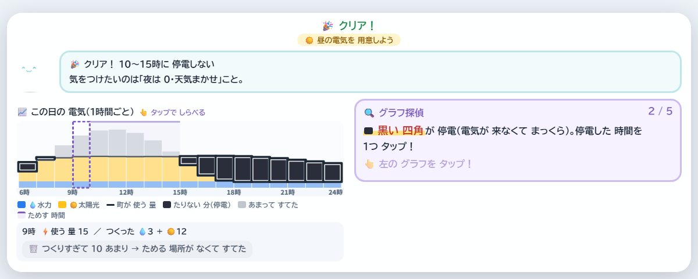
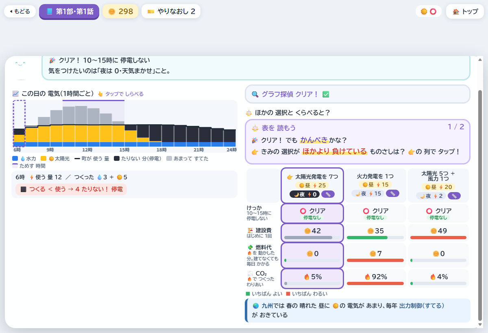
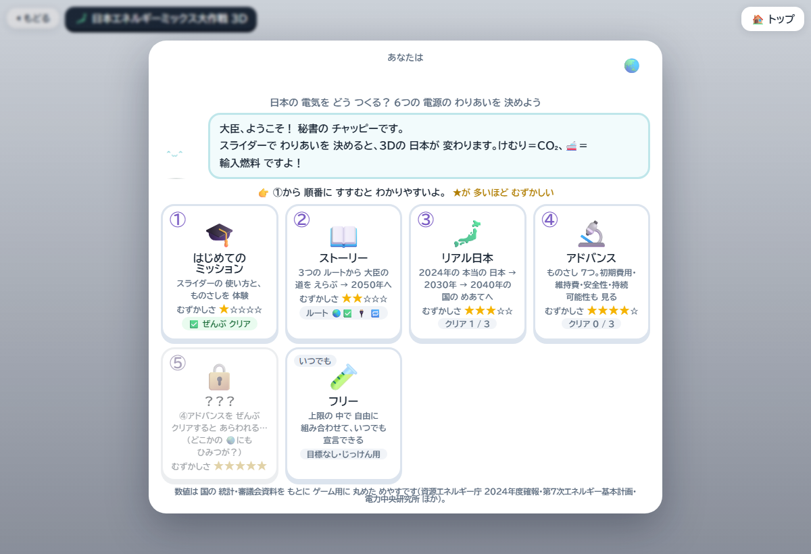
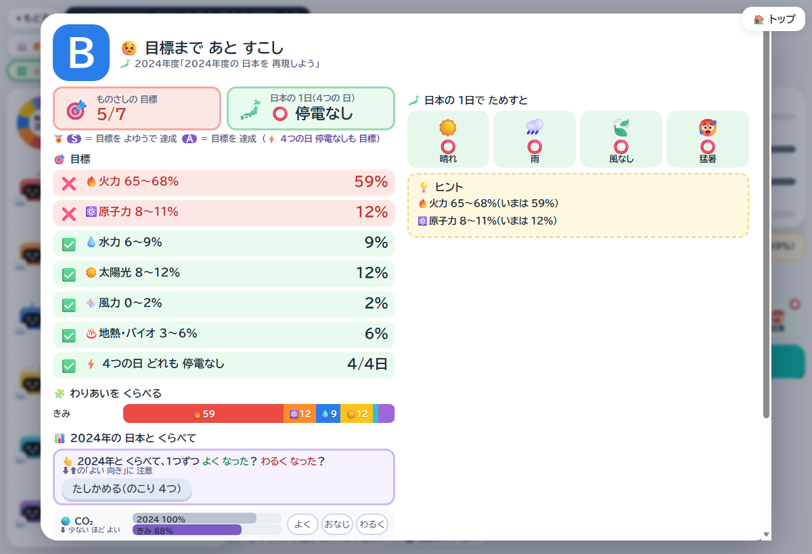
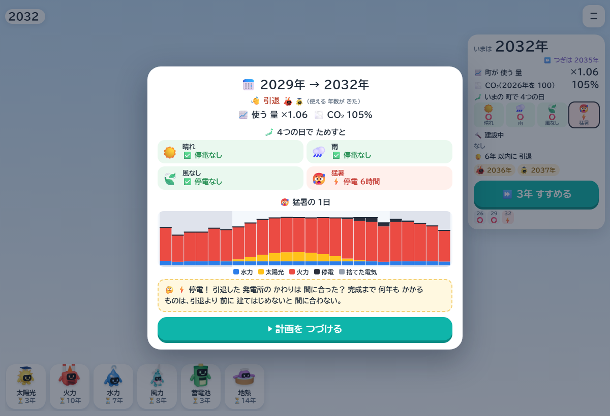
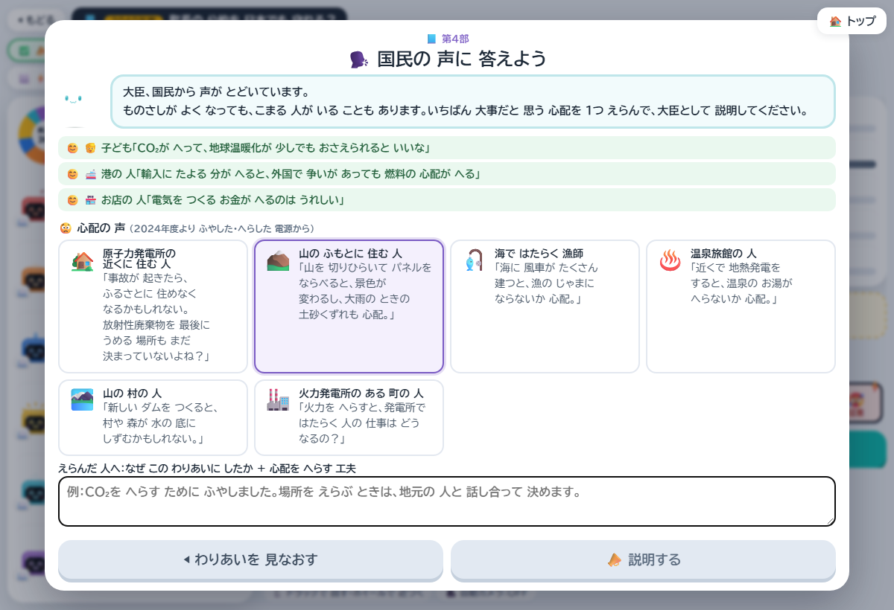

OVERVIEW
体験する → グラフと表を読む → 話し合う、をくりかえして考える
電気は、使う量とつくる量が「毎時間」合っていないと停電します。エネルギーシティでは、選んだ発電所で町の1日をためし、停電した時間や、あまって捨てた電気をグラフから読みとります。クリアしても終わりではなく、ほかの選択と表でくらべ、自分の選択が負けているものさしを見つけます。どの電源にも長所と弱点があり、「何を大事にするか」で答えが変わることに気づけるように作りました。
⚡
安定
停電しない日の数
晴れ・雨・風なし・猛暑などの日を、1時間ごとにためす。1年の平均で足りていても、夕方に足りなければ停電する。
🌏
環境
CO₂
発電所をつくる・運ぶ・こわすまでふくめた CO₂（ライフサイクル）で比べる。
🪙
経済
建設費・燃料代・発電コスト
建設費は「はじめに1回」、燃料代は「動かした分だけ毎日」。国の発電コスト検証の値がもと。
🛡️
安全・自給・社会
国産率・町の人の声
燃料の輸入、事故や災害への強さ、発電所の近くに住む人・温泉・漁業の心配。
| 項目 | 内容 |
|---|
| プラットフォーム | Web アプリ（ブラウザで動作・インストール不要） |
| 技術スタック | HTML5 / CSS3 / Vanilla JavaScript / Three.js（3D）/ Web Audio API（BGM・効果音） |
| 動かし方 | game/index.html を開くだけ。インターネット接続なしでも遊べる（静的ファイルのみ） |
| 対象 | 中学生（技術科「エネルギー変換の技術」が中心）・高校生・一般 |
| プレイ時間 | シナリオ 各部 約15〜20分 ／ 大作戦3D 1チャプター 約5分 ／ おまけ 約20分（4〜5時間の単元で使う例あり） |
| 動作環境 | Chrome / Edge / Safari / Firefox（PC・タブレット・スマートフォン、WebGL 対応端末） |
| 記録 | 選んだ道・宣言・話し合いメモ・ふりかえりは、そのブラウザの中にだけ保存。学習レポートとして PDF に保存できる |
MODES
メインは「シナリオ」と「大作戦3D」、おまけが1つ
町の1日（1時間ごと）から始めて、日本全体のわりあいへ。最後に、地図の上で「どこに・いつ建てるか」を考えるおまけがあります。
話ごとに3つ前後の選択肢から選び、その町の1日をためします。選択肢には「☀️昼 ⚡25 ／ 🌙夜 ⚡0」のように、グラフの「使う量」と同じものさしで出せる量を表示。太陽光7つと火力1つの大きさのちがいが、数で見えます。
1️⃣第1部 町の電気をまかされた昼・夜・燃料の値上がりなど、1話ずつ。グラフ探偵で停電・すてた電気・ためた電気を見つける。
2️⃣第2部 町が大きくなる工場が来て、⚛️原子力・♨️地熱が登場。はじめに📣公約（安定・環境・経済・安全・自給から3つ）を立て、★は公約を守れたかでつく。大地震・温泉の反対・輸入燃料の値上がり・雨の日がつづく、など選んだ電源で話が分かれる。
3️⃣第3部 みらいの町を設計しよう公約・予算・5つの日（晴れ・雨・風なし・大地震・電池の点検）を条件に、発電所と設備を組み合わせて設計。ためして原因を考えて直し、強み・弱み・役に立ったものを選んでふりかえる。
4️⃣第4部 日本の大臣へ第3部の公約を日本でも守れるか、3Dの日本地図でわりあいを決める。ふやした電源ごとに「国民の声」（原子力の立地地域・温泉旅館・漁師・ダムの村・火力の町など）が出て、1つ選んで大臣として説明を書く。国の2040年度のめやすとくらべてから宣言する。


スライダーで火力・原子力・水力・太陽光・風力・地熱とバイオのわりあいを決めると、3Dの日本地図とものさし（CO₂・発電コスト・停電しない日・国産率など）が変わります。上限は国の2030年度・2040年度のめやすで、「100%水力」のような日本でできない組み合わせは選べません。どのチャプターも「4つの日（晴れ・雨・風なし・猛暑）どれも停電なし」が目標の1つです。
①〜⑤おすすめの順番と、むずかしさ（★1〜5）①はじめてのミッション → ②ストーリー（環境・安定・持続の3ルート→2050年）→ ③リアル日本（2024年度の再現→2030年度→2040年度）→ ④アドバンス（ものさし7つ）→ ⑤博士モード（ものさし10）。フリーはいつでも。
⚡停電した日は「どうすれば？」に答えてからその日の1時間ごとのグラフを見て、天気に左右されない電源・ためた電気の役わりを考える。
📊結果は自分で判定してから答えを見る2024年とくらべて、ものさしを1つずつ「よく・おなじ・わるく」と判定。下がったものは「どれだけ下がったか」「目標は守れているか」を伝え、何かをゆずる判断を考える。
📖電源の特徴カード天気と時間での変わり方・1日の形・6つの電源とのくらべ・上限の理由。本物の発電所の写真と大きさも見られる。
📜わたしのエネルギーミックス宣言大事にする順と、たよる電源・弱点のおぎない方・くらしでできることを書いて、画像で保存。


2026年の町で、時間を止めて地図に発電所を建て、「⏩ 3年すすめる」をくりかえして2050年をめざします。建てるのに何年もかかり（☀️3年・💧7年・💨8年・🔥約10年・♨️約14年）、一度建てると何十年も使います（☀️💨25年・🔥💧♨️40年）。使う電気は2040年まで増える見通しです。古い発電所の引退の波を見こして、早めに建てはじめないと停電する年が出ます。住宅・温泉・海ぞい・ダムの近くでは町の人の声が出て、話し合うと完成がおくれます。
| 進め方（計算でためした例） | 結果 |
|---|
| 何もしない | 2032年から停電、2038年から大停電（古い火力が引退） |
| 🔥 火力だけでつなぐ | 完成まで約10年。間にあわない年は停電し、CO₂は2026年より増える |
| ☀️🔋 太陽光と蓄電池だけ | 2038年から雨・猛暑の日に停電 |
| 2035年から始める | 2038〜2047年に停電がつづく |
| 早めに地熱・風力・水力も建てる | 停電なしで、CO₂は2026年の約2割に |


学びのしかけ
「クリア＝かんぺき」にしない
正解をなぞって終わらないように、読みとる・くらべる・説明する場面を、進むための条件にしています。
🔍グラフ探偵1時間ごとのグラフで「いちばん使う時間」「停電した時間」「すてた電気」「ためた電気」をタップして見つける。停電は黒、すてた電気は灰色で、電源の色とまぎれない。
⚖️表を読もうクリアしても、ほかの選択と表でくらべて「自分の選択が負けているものさし」と「ほかの選択の弱点」を見つけるまで次へ進めない。
📣公約大事にするものを自分で3つ決め、守れたかで★がつく。公約に入れなかったものさしがどうなったかを話し合いの材料にする。
🔋蓄電池だけが答えではないあまった電気の使いみち（ためる・時間をずらす・ほかの地域へ送る・少しすてる）にはどれも弱点がある。第3部の「電池の点検」の日は約35%が止まる（韓国 2019年の例）。
💬話し合いタイム各部の終わりに、自分のエンディング・公約・ものさし・えらんだ道をまとめた「🪪わたしのカード」と、話し方のヒント（話型）を表示。友だちの考えで「なるほど」と思ったことをメモに残す。
📝学習レポート（PDF）選んだ道・グラフの読みとり・公約・宣言・国民への説明・話し合いメモ・自分の意見を1枚に。評価のめやす（知識・技能／思考・判断・表現／主体的に学習に取り組む態度）と自己評価・先生欄つき。
ゲームの🔥1つを本物の川崎火力発電所1号系列（150万kW・約28ha）とすると、☀️1つは約40万kWのメガソーラーで、広さは約730ha（東京ドーム約150個分）。写真の発電所を「ものさし」にして、何か所分・何基分かで見せます。ゲームの町の大きさとは合わないことも画面に書いています。
CHARACTERS
7人の発電キャラ
発電所はみんな、顔のある「ブロックの子」。太陽光発電は日がしずむとナイトキャップで寝てしまい、火力発電は全力のとき汗をかき、風力発電は風がないとしょんぼりします。
| 電源 |
建設費
🪙 1つ |
出力
⚡ 1つ |
CO₂
g/kWh |
本物にすると |
| ☀️ 太陽光 | 6 | 4（晴れの昼だけ） | 38 | 約40万kW・約730ha |
| 🔥 火力 | 35 | 15（上げ下げできる） | 690 | 約150万kW・約28ha |
| 💧 水力 | 32 | 5.6（ほぼ一定） | 11 | 黒部川第四 約1.7か所分 |
| 💨 風力 | 19 | 7（風しだい） | 26 | 風車 約350基 |
| 🔋 蓄電池 | 20 | 出す力6・ためる量24 | 0 | 紀の川蓄電所 約13か所分（出力で比べた数） |
| ♨️ 地熱 | 31 | 4.5（一定） | 13 | 八丁原 約4か所分 |
| ⚛️ 原子力 | 141 | 27（一定） | 20 | 柏崎刈羽6号機 約2基分 |
※ 建設費は「1つの出力 × 国の1kWあたりの建設費（発電コスト検証2025）」で、🔥1つ＝🪙35にそろえた値。CO₂は電力中央研究所のライフサイクルCO₂（火力は2024年度の石炭・LNG・石油のわりあいで平均）。
SIMULATION
1時間ごとに「使う量」と「つくる量」をくらべる
使う量・晴れの日の太陽光・風の1日の形は、東京エリアの2024年の実データからつくっています。毎時間、つぎの順で電気を割りあてます。
1
天気や時間で決まる電源を足す
原子力・地熱・水力・風力・太陽光と、動いている火力の最低出力（3割）。雨の日の太陽光は晴れの日の約3割、風なしの日の風力はふつうの日の約1割（東京エリア 2024年）。
2
あまったら蓄電池にためる → それでもあまれば捨てる
ためて出すと1割へる（蓄電池）。捨てる（出力制御）のは太陽光・風力から。
3
足りなければ蓄電池から出す・火力を上げる
ためた分しか出せない。火力は選んだ分（建てた分）までしか動かない。燃料代と CO₂ がかかる。
4
それでも足りない分が停電
グラフでは黒で表示。どの日の何時に足りなかったかから、原因と対策を考える。
授業活用
4〜5時間の単元で使う例
中学校技術科「エネルギー変換の技術」の、技術の見方・考え方（社会からの要求・安全性・環境への負荷・経済性）を軸にしています。各部の終わりに話し合いタイムがあります（家庭学習では OFF にできます）。
RECOMMENDED FLOW
単元の流れ（例）
1
第1部＋グラフ探偵
話し合い：同じ話でちがう選択をした人と、理由と結果をくらべる。
1時間目
2
第2部：公約を立てる
話し合い：ちがう公約の人と「公約に入れなかったものさしがどうなったか、それでよいと考えた理由」をくらべる。
2時間目
3
第3部：設計 → ためす → 直す → ふりかえり
話し合い：いちばんちがう町を設計した人と「どの日に強いか」「何をゆずったか」をくらべる。
3時間目
4
第4部：日本の大臣へ → 宣言
話し合い：ちがう国民の声を選んだ人と、どう説明したかをくらべる。大作戦3Dのリアル日本で国の計画に挑戦してもよい。
4時間目
5
学習レポートを書いて PDF で提出
評価のめやすに沿って自己評価。おまけ（町の地図で2050年へ）は発展・家庭学習に。
5時間目
技術
エネルギー変換の技術
発電方式ごとの特徴（出力の調整・天候への依存・立地・建設にかかる年数）と、技術の見方・考え方による評価と折り合い。
理科
気象・エネルギー・環境
日射・雨・風と発電量の関係。ライフサイクルの CO₂。エネルギーをためる技術とその限界。
社会
資源・エネルギーと公民
燃料の輸入と自給率、立地地域の声と合意形成、2030年度・2040年度の国のめやす。
総合
探究学習
自分のエネルギーミックス宣言をもとに提案。ゲーム（モデル）と現実のちがいを調べる。
話し合いに使える問いの例
正解が1つではない問いです。ゲームの体験とグラフ・表を根拠に話し合えます。
太陽光をもっと増やせば、問題はなくなる？夜・雨の日・ためられる量はどうだった？
公約に入れなかったものさしは、どうなった？それでよいと考えた理由は？
あなたの町の「いちばんの弱点」はどの日？5つの日・4つの日の結果から
国民の声に、どう説明する？数字がよくなっても、こまる人はいる
国の2040年度のめやすと、どこがちがう？国の案は何を前提にしている？
もっと早く決めればよかったことは？建てるのにかかる年数と、引退の時期から
DATA
数値の根拠
生徒が「世の中の正解」と受けとらないように、ゲームの数は公的な統計・審議会資料などから取り、根拠がないものは使わないか「ゲームのきまり」と画面に書いています。数値ごとの根拠は game/数値の根拠チェック.md にまとめています。
📈使う量・太陽光・風・天気の倍率東京電力パワーグリッド「エリア需給実績」2024年
💴建設費・燃料費・運転維持費・設備利用率・発電コスト・稼働年数発電コスト検証ワーキンググループ（2021年・2025年2月）
🗾電源構成・国のめやす・使う量の見通し資源エネルギー庁 エネルギー需給実績（2024年度確報）、第6次・第7次エネルギー基本計画
⏳建てるのにかかる年数FIT/FIP の運転開始期限、資源エネルギー庁・調達価格等算定委員会の資料
🎮ゲームのきまり（根拠なし・画面に表示）町の大きさ、チャプターの目標の数、安全性・持続可能性の点数（本家「大作戦」の考え方）、話し合いで完成がおくれる年数など
🛠️ 先生向け
電源の数値・天気・セリフは game/js/config.js、授業での使い方・評価のめやすは game/README.md、数値の出典は game/数値の根拠チェック.md にあります。話し合いタイムは、シナリオの部メニューで OFF にできます。
▶ ゲームを開く
1人1台端末で遊べます。WebGL（3D 表示）に対応していない古い端末では動かない場合があります。動きが重いときは、ほかのタブを閉じてお試しください。